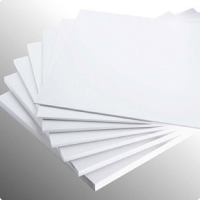
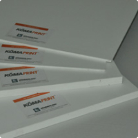

Листовые материалы
ПВХ пластики (PVC)
- KömaTex (Германия) вспененный листовой ПВХ
-
Листы KömaTex благодаря плотной однородной поверхности пригодны для трафаретной печати, окраски и пленочной апликации, а также могут легко и экономично обрабатываться стандартными инструментами , предназначенными для обработки дерева и металла. Их можно резать, пилить, обрабатывать напильником, сверлить, строгать, фрезеровать, полировать и заворачивать в них шурупы без деформации и растрескивания материала. Листы KömaTex могут подвергаться сгибанию и фальцовке при нагревании, а также вакуумному формованию.
KömaTex (Германия) это листовой синтетический материал из жесткой пены ПВХ, имеющий регулярную мелкоячеистую структуру и матовую поверхность. KömaTex (коматекс ПВХ) устойчив к воздействию окружающей среды. Белый пластик не выцветает под воздействием солнечного света и имеет свойство замедлять распостранение огня. Обладая низкой теплопроводимостью, и обеспечивая хорошую изоляцию, а также благодаря разнообразным индивидуальным качествам, этот материал нашел широкое применение в различных областях. KömaTex (коматекс ПВХ) изготавливается без использования опасных для здоровья и окружающей среды веществ. Он не содержит бария, кадмия и свинца.
Листы KÖMATEX из-за плотной однородной поверхности пригодны для трафаретной печати, окраски и пленочной аппликации, а также могут легко и экономично обрабатываться стандартными инструментами и механизмами, предназначенными для обработки дерева и металла. Их можно резать, пилить, обрабатывать напильником, сверлить, строгать, фрезеровать, полировать и заворачивать в них шурупы без деформации и растрескивания материала. Обрабатывающий инструмент должен быть острым во избежании разрывов и сколов. Листы KÖMATEX подвергаются сгибанию и фальцовке при нагревании и вакуумному формованию.
-
Основные свойства:
- регулярная мелкоячеистая пенная структура;
- матовая поверхность;
- однородная окраска;
- малый вес;
- низкая теплопроводность, высокие изоляционные свойства;
- способность поглощать вибрации;
- устойчивость к атмосферным воздействиям и ультрафиолетовому излучению;
- малое впитывание воды, не подверженность гниению;
- устойчивость к химическим веществам и не подверженность коррозии;
- особая легкость обработки;
- пригодность для склеивания, нанесения печати и т.д.;
- трудновоспламеняемость;
- готовность для наружных и внутренних работ без предварительной подготовки.
-
Приминение:
- вывески и буквы, транспаранты, таблички, дисплеи, декорации витрин, выставочные стенды.
- строительство торговых объектов, внутренняя отделка интерьеров, сантехкабины, тепло- и звукоизоляция, системы кондиционирования воздуха и вентиляции, отделка оконных и дверных откосов, стеллажи витрин магазинов, торговая мебель, дорожные знаки и многое другое.
- ёмкости, оборудование - столы, полки и т.д.
- шкафы, корпуса приборов, пульты и панели управления
- моделестроение
- судостроение (в интерьере)
- фотокаширование
- производство мебели
Наименование Размер мм. KömaTex 2440х1220х1 KömaTex 2440х1220х2 KömaTex 2440х1220х3 KömaTex 2440х1220х4 KömaTex 3050х1560х8 KömaTex 3050х1560х10 - KömaPrint (Германия) ПВХ пластик для печати
-

KömaPrint ПВХ пластик для печати
KömaPrint воплощает в себе такие инновационные свойства ПВХ плит, с соблюдением всех специальных требований, которые отвечают самым строгим запросам печатной индустрии и производителей крупноформатных изображений.Матовая текстурированная поверхность и яркий белый цвет, соответствующий RAL 9003, являются основой получения превосходных печатных изображений. Преимущества этого материала используются для получения выдающихся результатов при самых разных видах печати: шелкографии, цифровой печати и т.п., а также при ламинации.При использовании в качестве основы для изображений KömaPrint сочетает в себе вспененную структуру и очень стабильный состав, и в тоже время достаточную жесткость и легкий вес. Материал устойчив к воздействию влаги и поэтому его можно с успехом использовать как внутри так и вне помещений.
KömaPrint превосходен в обработке, как при использовании по прямому назначению (печати) , так и при перфорации, подрезке, пилении и разрезании.
Область применения:
РЕКЛАМА
KömaPrint отлично подходит для изготовления изображений способами цифровой печати и шелкографии, надписей, баннеров, оформления POS и витрин, а также для ламинации фотографий. KömaPrint идеально подходит для изготовления печатных изображений для презентаций, оформления демонстрационных залов, изготовления паззлов, и декора интерьера.
Наименование Размер мм. KömaPrint 3050х1560х4 KömaPrint 3050х2050х4 KömaPrint 3050х2050х5 KömaPrint 3050х2050х6 KömaPrint 3050х2050х8 KömaPrint 3050х2050х10